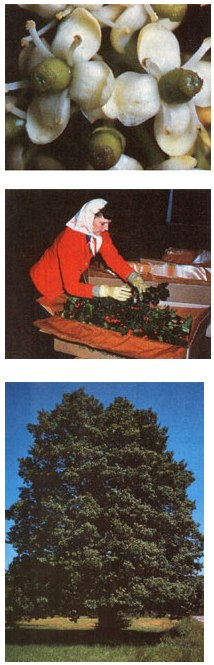

"The mistletoe hung in the castle hall,/The holly branch shone on the old oak wall;/The baron's retainers were blithe and gay/a-keeping a Christmas holiday." (Thomas H. Bayley)
The familiar glossy, spiked leaves and brilliant red berries of the holly are closely linked with our traditional Christmas celebration. Yet, the use of holly, mistletoe, and other holiday evergreens actually originated in pagan rituals that date back long before the advent of Christianity. The druids of ancient Britian held the holly tree sacred and decorated their homes with it . . . the early Teutons hung sprigs of holly in their dwellings in hopes that the friendlier fairies of the forest might find refuge there from the winter's chill . . . and in Roman times, holly was used in the celebration of the Saturnalia, or "turning of the sun" festival honoring Saturn (the god of seedtime), which was held on the winter solstice. At that time of year, when the days were shortest, it was customary to send gifts accompanied by holly boughs to friends as signs of goodwill. Many of these customs were adopted by the early Christian church, and so became associated with the Christmas celebration.
Today, many folks-realizing that holly is too beautiful to enjoy only once a year-are discovering that growing this "holiday" tree year-round can be an easy and profitable means of brightening up the home landscape. Hollies are versatile ornamentals, magnificent as single trees, in hedges and screens, or-in the dwarf forms-as ground covers. The hollies serve an important function in environmental plantings, too, since they're extremely tolerant of air pollutants, act as excellent sound and light barriers, and attract birds and animals that feed on the fruits and leaves. What's more, many species of hollies can earn their keep! If you time the shrubs' annual pruning to coincide with the Christmas season, even small plantings of holly can supply you with a handsome holiday cash crop (or, at least, free decorations) of trimmed greens and berried boughs.
TYPES OF HOLLIES
The name holly generally brings to mind the glossy-leaved, red-berried English and American species. But there are many other species, some of which look quite different from the more familiar types. In fact, although the English holly-a British import that has become acclimated to parts of the U.S., particularly the Pacific Northwest-still reigns supreme in the commercial Christmas holly market, more and more people are finding that the native North American hollies, both the evergreen and deciduous species, can provide equally attractive home decorations and landscape plantings. And because many of the indigenous species have the added bonus of increased winter hardiness, they can be grown over a much wider range.
About 40 of the more than 300 known species of hollies will grow in the United States (about half of those are native to this continent), and hundreds of cultivars of these species are available. The variability among the species is quite extensive: Some plants may reach as high as 70 feet, while others may grow no more than 12 inches tall. The leaves may be spiny or smooth-edged, and (as noted above) there are deciduous as well as evergreen varieties. The berries may be red, yellow, orange, white, or even black. What's more, not all hollies even have berries. In most species the male and female flowers are borne on separate plants, with only the females bearing fruit. These American-grown hollies can be classed into six major groups: English, American, Chinese, Japanese, miscellaneous evergreen, and deciduous.
English holly (Ilex aquifolium), with its glossy, dark green or variegated foliage and its brilliant red (or, less commonly, yellow) berries, is considered by many gardeners to be the most beautiful. Although the English hollies actually comprise only one species, so many cultivars have been developed that a number of the hybrids are now often referred to separately as I. x altaclarensis. This import favors the climate of the Pacific Northwest (where the plant will often reach heights of 70 feet), but many of the cultivars adapt well to East Coast growing conditions, too.
Anyone who has wandered in the fields and woodlands of the southeastern U.S. is no doubt familiar with the glossy leaves and gleaming berries of the broad-shaped American holly, I. opaca. This species is native to the eastern and gulf coasts, but has become adapted to the Midwest and even parts of
New England. The American holly is most at home in rich, swampy lowlands (where it may reach heights of 50 feet or more), yet it will also grow in the mountains. Although most of the cultivars have spiny, olive green leaves and red berries, some forms have smooth-edged foliage and yellow fruits.
The Chinese holly (I cornuta) is native to the hilly regions bordering the Yangtze River. In the U.S., its cultivars range from dwarf forms to shrubs or compact trees up to 30 feet tall. The glossy, dark green foliage and large, showy, bright red berries of the Chinese holly make it an unusually attractive garden plant. Cultivars are available with spiny or smooth leaves; some have yellow or orange fruit.
The Japanese holly (I crenata) is often referred to as the workhorse of landscape gardening, but because it has small, dark green leaves (like those of boxwood) and jet black berries, many folks don't recognize it as a holly. The many cultivars offer a wide variety of applications, including ground covers and tall hedges . . . and because some Japanese hollies are quite winter-hardy, the plant is suited to northern and midwestern gardens as well as those in the South and on the West Coast.
There are a number of other evergreen hollies that are native to this country and that deserve greater recognition as ornamentals. The black-fruited inkberry (I glabra) is the most abundant and most cold-resistant of the native American hollies, and these traits make it especially attractive to northern gardeners. Another black-fruited species, the large gallberry (I coriacea), is similar in appearance to the inkberry but prefers the warmer climate of the southern coastal plains. Also indigenous to the southern sand dunes is the yaupon holly (I vomitoria), a highly regarded ornamental species that's well suited to formal shapings and hedge use. A number of cultivars of the yaupon holly are available, including dwarf and tree specimens, and fruiting (with bright red-or yellow-berries) and nonfruiting varieties. The dark green leaves and red berries of the dahoon holly (I cassine) are similar to those of the American holly. This native southern species grows farther south than any of the other endemic red-fruited evergreen hollies. Hybrids between I. cassine and I. opaca are known as the Foster hybrids and are popular as ornamentals.
The final category of hollies, the native deciduous species, is by far the least appreciated. In the northernmost areas of the country, where evergreen hollies are not hardy, the deciduous types display their bare branches laden with brilliant red jewels throughout the winter months . . . while in the summer, their vibrant greenery serves well in both ornamental shrubs and hedges.
Probably the best known of the deciduous hollies is the winterberry (I verticillata), which is also called the black alder. This widespread species is found in swamplands all along the eastern coast but will adapt to drier soils when cultivated as a landscape shrub. It generally grows no larger than a small tree and produces waxy red-or, rarely, yellow-fruits at Christmastime. Other deciduous hollies include the possumhaw (I decidua), a widespread southern species that is a small shrub with dull green leaves and glossy orangered or, sometimes, yellow berries . . . and the mountain holly (I ambigua var. montana), which is found in both the North and the South and is similar to the possumhaw but has bigger leaves and large bright red fruits.
SELECTION SPECIFICS
When choosing hollies for your homestead collection, keep in mind the different climatic preferences of the various species. In general, evergreen hollies will do well in regions of moderate temperatures, while the deciduous species will tolerate harsher conditions. In areas where the hardiness of an evergreen species is doubtful, pay close attention to the microclimate in which the shrubs will be planted. Which side of a building the plants are located on, for example, might make a considerable difference in how they fare during the colder months. Choose a wintershaded site, so that the hollies won't be exposed to the morning sunshine, and make sure they'll have protection from the wind. As an added measure, mulch the plants heavily in the late fall to protect the roots from alternate freezing and thawing.
Another consideration when choosing your holly trees, especially if you intend to plant a small grove with the idea of bringing in extra cash from the Christmas prunings, is marketability. If you decide to plant a few English hollies, for instance, select a mixture of green and variegated specimens. Check with local nurseries and your county agricultural extension agent to determine the most salable and adaptable cultivars for your area.
Finally, keep in mind that most holly species are dioecious, meaning that both male and female plants must be present to induce fruiting. The general rule is to plant one male, or staminate, tree within 100 feet of every ten pistillate trees to insure adequate pollination.
PLANTING POINTERS
Next to selecting varieties that are appropriate to your climate and landscaping needs, the most important concern is supplying the plants with an adequate growing medium. All hollies develop best in well-drained (but not dry), fertile, light loamy soil that has a neutral or slightly acid pH. Be sure to allow sufficient room for the full-grown plant, too (unless you're planning to trim the trees into a hedge), as many hollies require a good deal of space to develop. Tree-type species are best spaced about 25 feet apart, which-in an orchard situation-equals roughly 70 trees per acre.
The best time to plant hollies is during the dormant season, which in most areas is in the early spring, before any new growth appears. However, in regions that have mild winters, such as the South, transplanting can also be done successfully in the late fall.
It's generally recommended that you buy your plants from a nursery, as transplanting hollies from the woods is often unsuccessful unless specific procedures are followed. Because hollies take a number of years before they fruit, it's impossible to be certain of the sex of small wild trees. And, of course, if you're seeking a specific cultivar, you'll have to purchase it from a nursery.
However, it is possible-with the proper care-to successfully relocate a wild tree (assuming that there is no local law that forbids the transplanting of native hollies). If you'd like a berried specimen, select an already fruiting tree so that you'll be certain of its sex. Then, because hollies don't begin to bear until they're quite developed, you'll need to take considerable care in freeing the tree's roots. Prepare such specimens a year or two in advance by digging a trench, some distance from the trunk and deep enough to cut through most of the roots, during the tree's dormant period. Then pack the ditch with good soil. If the holly is large, it's best to take two years to prepare for the move, trenching halfway around the tree one year and digging on the remaining side the next. A new root system will develop in the filled-in trench, giving the transplanted tree functioning roots close to its trunk. Just before digging the holly, prune the top back sufficiently to compensate for the inevitable loss of some of its root system during the move (removing one-fourth of the foliage is usually about right). Then, after digging, wrap the trunk and branches in a two-inch-thick (or more) moisture-retaining covering-such as burlap or sphagnum moss-and water the bundle thoroughly. When transplanting either wild or nursery-grown trees, it's imperative that the trunk, roots, and branches remain moist throughout the move and until new growth appears after planting.
Prepare the ground for your new arrival by digging a hole twice the size of the root ball and refilling it to half its depth with good soil. If the natural earth is clayey, break up the soil at the bottom of the hole with a spading fork and mix in generous amounts of sand and organic matter. Then tamp the soil in the hole to provide a firm base for the tree.
Nursery-grown hollies are sold either balled-and-burlapped or in containers. Burlap-wrapped roots can be set "as is" in the hole, but the container should be cut away from "canned" specimens. Set the plant in the hole and pack good soil around it, leaving a slight surface basin to hold water. Stake the plant if needed, and if the transplant has not already been pruned, cut it back at this time. Then water the holly thoroughly.
After planting, mulch the base of the tree with a three- to four-inch-deep layer of leaf mold or similar material to help retain the moisture in the soil and to reduce weed growth (because hollies have such shallow roots, the soil around them should never be cultivated). Then keep an eye on the weather, and if the rainfall is insufficient to keep the roots moist, drench the plant at weekly intervals, especially during its first few seasons of growth.
CARING FOR THE CROP
Hollies demand little care once they're established, but they do appreciate an annual dose of fertilizer, especially if they're expected to supply cut greens every year. For trees with one-half-inch-diameter (or less) trunks, apply half a pound of fertilizer with an 8 to 10% nitrogen content or surface-dress the plants with a liberal amount of rotted manure in the early spring. Larger trees require one to two pounds of fertilizer (or the equivalent) for each inch of trunk diameter.
Most hollies are fairly resistant to pests and disease, although the genus as a whole is subject to quite a few ailments. The most aggravating holly pest is the leaf miner, which tunnels through the inner tissues of the foliage and disfigures the leaves. Other pests and diseases include scale insects, red spider mites, aphids, mealybugs, root nematodes, and various fungi and molds. If a disease or pest proves troublesome, contact your local agricultural extension agent for information about the appropriate controls for your area.
In most cases, however, poor performance is caused, not by pests or disease, but by choosing an unsuitable variety for your climate, improperly transplanting the tree, alternate freezing and thawing of the shallow roots, or inadequate moisture. Much of the damage incurred from disease and insects can be prevented by giving the holly plenty of growing room and pruning injured or crowded branches.
Other than fertilizing your plants and keeping an eye out for pests, care for your holly crop will be minimal. Although pruning is sometimes needed when the plants are young to help them develop a leader shoot, the larger specimens are generally left to develop their natural form on their own, and-at most-are shaped just once a year, generally during the holiday season. If you've planted your hollies with the intention of harvesting the greens, this is when you'll reap the returns of your labor.
It usually takes five to eight years from the time the hollies are planted before they'll begin to "pay out" in greenery. The first trimmings should be limited to five to ten pounds per tree, then increased each year until you're harvesting from 10 to 20 pounds per tree after about the tenth season. After 15 years of growth, you can expect hollies to produce as much as 25 pounds of greenery per tree, depending, of course, on the variety you've planted. When pruning, always trim the plant so that its natural shape is maintained, and be sure to remove any injured limbs or lowlying branches that may be blocking the ventilation around the tree.
If the quality of your trimmings is good, and you did your initial homework of checking with prospective buyers to find out their preferred holly varieties before planting the trees, marketing your greens should require little more than boxing up a few sprigs and showing them to florists in your area. Fiveand ten-pound allotments of commercially raised holly sell for over $11 and $20, respectively . . . and though your operation won't be competitive with the technology used by the large out-of-state commercial suppliers (who treat the sprigs with hormones to retain their freshness and use refrigerated trucks for shipping), you should be able to develop a local market for your hollies.
So, during this Christmas season, as you decorate your home for the holidays and give thanks for the blessings of the past year, you might consider planting a holly tree next spring. Its boughs and berries will adorn your home's interior and enhance the natural beauty of the winter landscape . . . and the extra trimmings, could even provide you with a bit of pocket cash. And perhaps the holly's greatest gift is that, long after the Christmas tree has been taken down and the packages unwrapped and all but forgotten, that growing holly tree will serve as a living reminder of our appreciation for the beauty and peace to be found on this earth.
|
 TOP TO BOTTOM: In most holly species, only the female plant bears the familiar brilliant red berries. However; to insure adequate pollination and to induce fruiting, the female (pistillate) tree-shown here in bloom-must be planted within 100 feet of a male (staminate) holly tree .... The many varieties of holly can provide beautiful decorations for sale or for adding Christmas cheer to your home . . . or they can simply grace your landscape in their majestic natural forms. |
|
|